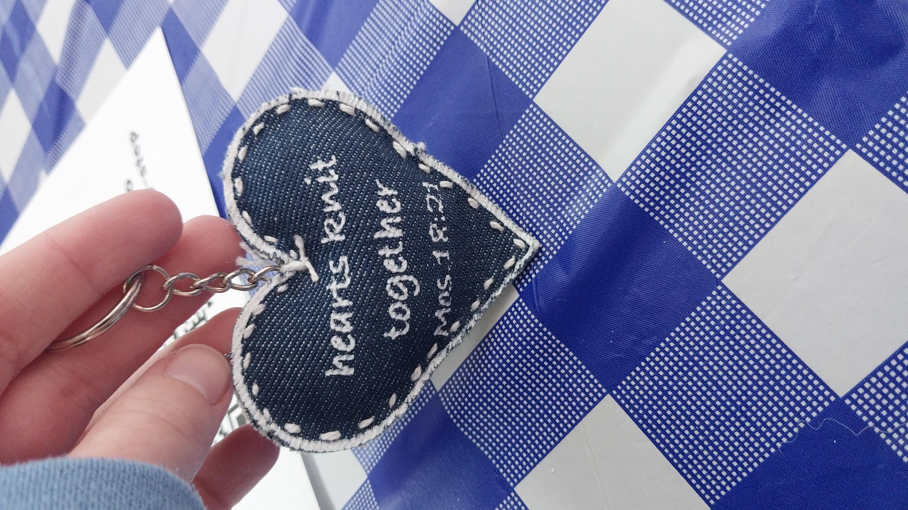

Book stuff
Books are so fun to read!
There are so many different ways to read a book, and it's amazing!
Reading a book can mean holding a hefty hardcover, flipping a floppy paperback, tapping through an ebook, or
listening to an audiobook, and each format has its own vibe. Print lovers often enjoy the feel and smell of paper,
while digital readers like having a whole library in their pocket, and audiobook fans get to “read” while driving,
walking, or doing chores.
- Print Book
- Ebook
- Audiobook
Print books (hardcover and paperback)
Hardcovers are usually more durable, look great on shelves, and tend to come out first, which appeals to
collectors and people who like books as physical objects. Paperbacks are lighter, cheaper, and more portable, so
they are popular for casual reading, travel, and tossing into a backpack.
This is for book dragons, those who hoard books and keep them as trophies!
Ebooks and digital reading
Ebooks let you adjust font size, search inside the text, highlight without guilt, and carry hundreds of titles on
one device, which is handy for students and commuters. Some studies suggest people may remember story structure
slightly better on paper, possibly because of the physical cues of pages and thickness, but digital formats win for
convenience and instant access.
These are for bookworms, or those who actually enjoy reading.
Plus, this option is usually cheaper, especially if you have Kindle Unlimited!
Audiobooks and listening
Audiobooks turn books into a hands-free experience, letting people “read” while they do something else, which is
one reason audiobook listening has grown rapidly in recent years. Narrators can add drama, accents, and emotion,
making stories feel more like performances, and this format is especially useful for people with visual impairments
or those who struggle with traditional reading.
These are for the busybodies that always has something to do!
Whether it's at work, doing chores around the house, or working on a side project, audiobooks
are the best bet for
you!
Here is a list of some book genres I enjoy!
- Christmas books
- Romcom
- Sci-fi
- Fantasy
- Historical Romance
Get a list of clean book recommendations here
This is not professional advice, just my opinion :)
Here's a fun picture that I like!
